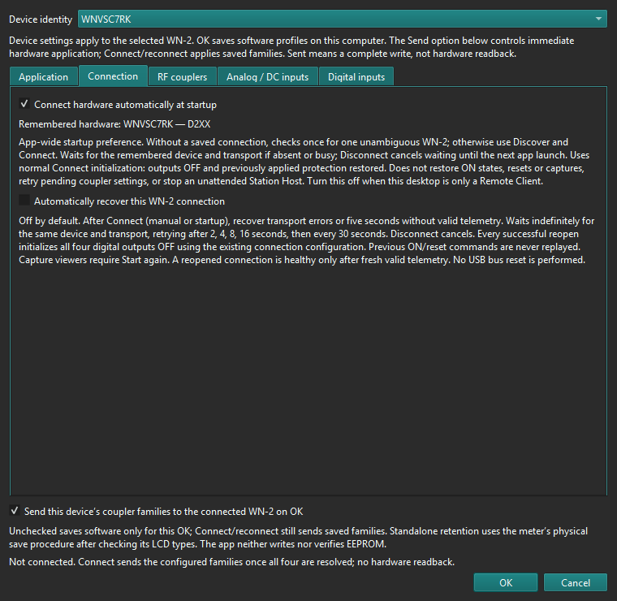
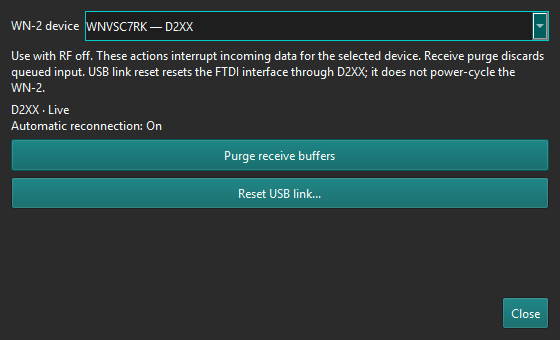

Automatic connection recovery and USB controls
Connect last-used hardware at startup
Open Device → Settings → Connection. Connect last-used hardware at startup is ON by default and applies to this desktop application.
- Connect your powered WN-2 by USB. Press Discover, select its serial number and your preferred D2XX or VCP entry, then Connect.
- Wait for live readings. The application remembers a physical meter only after valid data arrives; selecting an entry or a failed connection does not replace the remembered meter.
- Close RayWn2App normally and reopen it. The application connects that same serial number using the same connection method. You do not have to press Connect again.
An existing installation needs one successful connection in this version to establish the remembered target. Only the most recently connected physical WN-2 is remembered for startup; other meters can be connected manually. Emulators, replay sources and Remote Clients are never startup hardware targets. Saved instrument assignments stay unchanged, apart from the existing first-time binding of an untouched initial layout.
If the meter is unplugged, powered off or busy, startup keeps waiting, with increasing retry delays up to 30 seconds. It does not choose another meter or silently switch between D2XX and VCP. A changed VCP port name is rediscovered by meter identity. Press Disconnect to cancel startup waiting for this launch, or use Connect to make a different manual connection. Disconnect does not erase the remembered meter; the next launch tries again unless you uncheck the startup option and press OK.
Startup uses normal Connect initialization: digital outputs OFF, the established hardware LCD preference and previously applied protection settings. It does not replay ON states, protection resets or capture requests, and does not retry pending coupler-type changes. Startup is complete when fresh readings arrive. Enable the separate Automatically recover this WN-2 connection option if you also want recovery from interruptions later in the session.
A Station Host service may already own the USB meter. Startup does not stop the service, take over its connection or change drivers. Leave the service running and use Remote Client, or stop it intentionally before direct USB use. Turn startup hardware connection OFF on a desktop used only as a Remote Client. The unattended host's own configuration and Remote Client startup preferences are separate.
Automatic recovery
Open Device → Settings → Connection, select the WN-2 and check Automatically recover this WN-2 connection. Press OK. After Connect (manual or startup), the application can retry if the device loses power or stops responding.

Recovery is optional and saved separately for each WN-2. Select image to enlarge.

It keeps waiting for the same device rather than giving up after a fixed period. This is useful when a remote station may power the WN-2 on much later. Selecting Disconnect cancels the retries. Recovery does not switch to another WN-2 or another connection method. When the device returns, wait for fresh readings and a healthy link. Outputs are initialized OFF on reconnection. Capture viewers need Start again; old captures are not new data.
Explicit USB Recovery
If a connected WN-2 is behaving unexpectedly, open Diagnostics → USB Recovery. Check the selected identity and the action's explanation. Purge receive clears queued incoming data. Reset link is a stronger connection-recovery action where supported.

Recovery controls show availability and the outcome for the selected WN-2. Select image to enlarge.

Stop captures and avoid active control operations before recovery. A driver accepting the action is not yet proof that readings have resumed; wait for fresh telemetry. If the problem remains, use Disconnect/Connect and check cable, power and another program's use of the meter. These controls are for connection problems. They do not repair wiring, change calibration or resolve a genuine SWR fault.
Help home · RF StateSide · RayWn2App operator guide